AI logos that aren't slop. I wrote my design taste down as 13 rules, then tested whether AI could draw a logo that passes them.
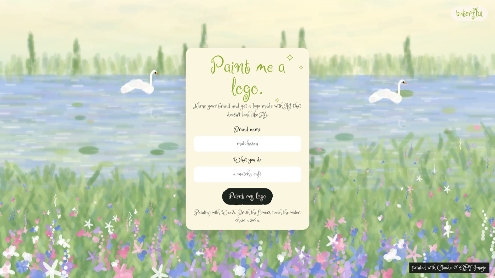
This is the kind of logo an AI tool gives a small bakery: a stock badge, a generic illustration, a font anyone could pick. AI is fast, but it doesn't know what good looks like.
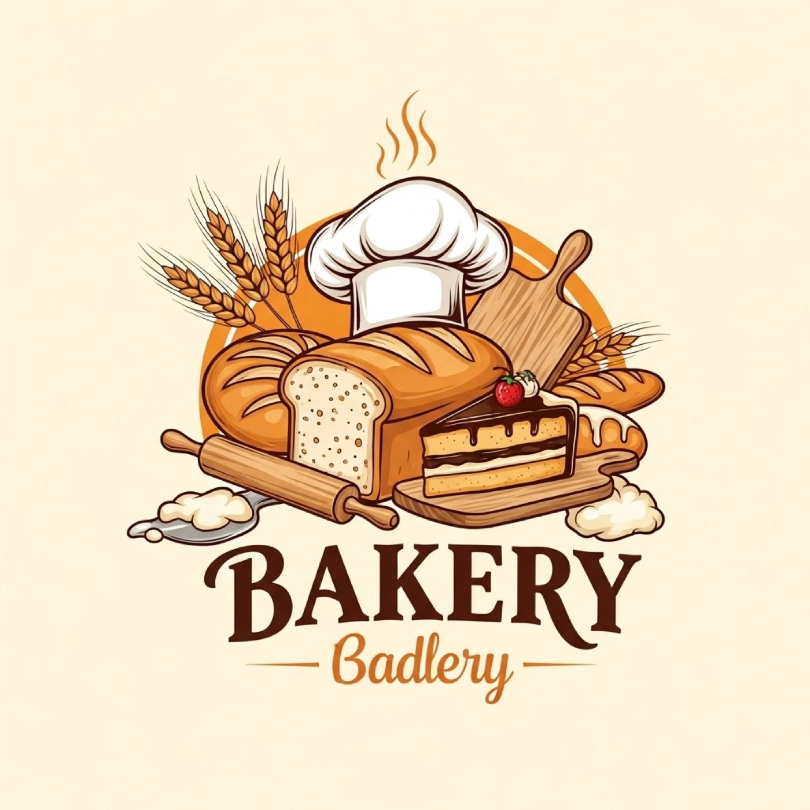
I collected ten logos I love and wrote down why each one works. That became TASTE.md: 13 rules, each scored 1 to 5. A logo passes at an average of 3.5.
You bring a moodboard and a brand name. For matchasan that meant soft greens, ceramics and a calm, handmade feeling.
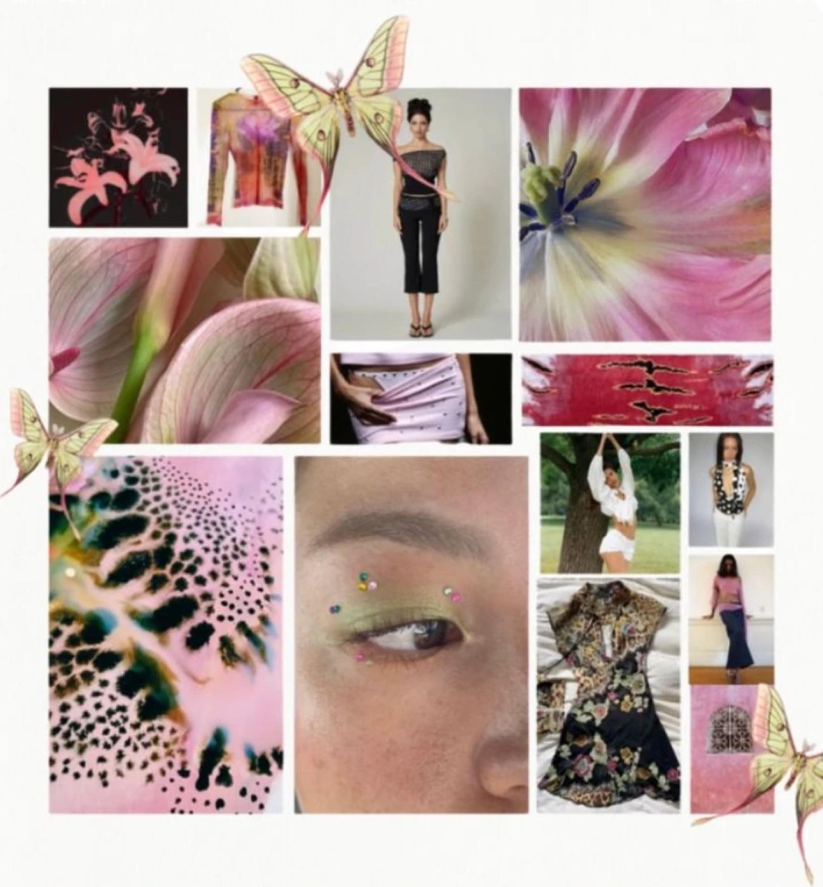
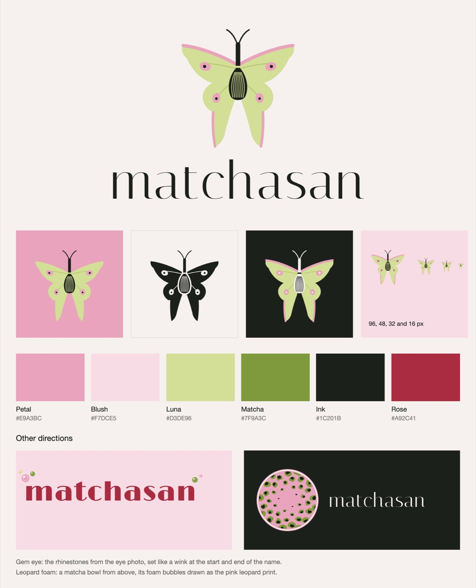
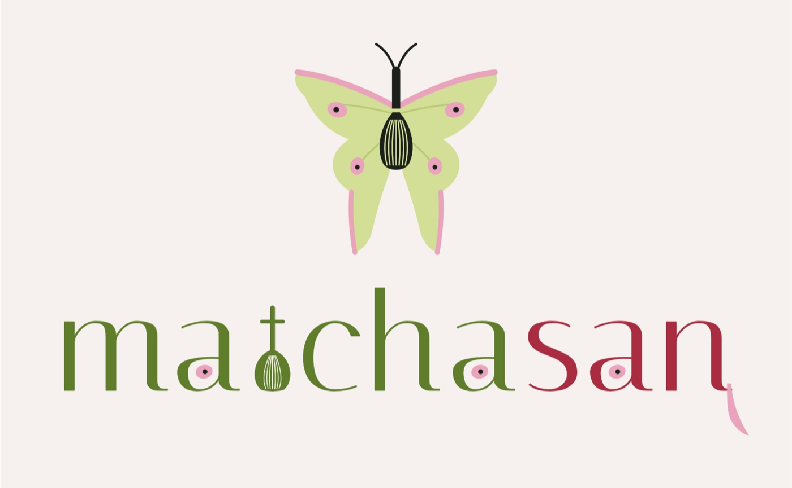
The first version was typed, not drawn. It looked fine and said nothing.
Then I gave Claude TASTE.md and had it draw the letters in code. Version 2 didn't feel whole. Version 3, after my written feedback, was the best of the code versions.
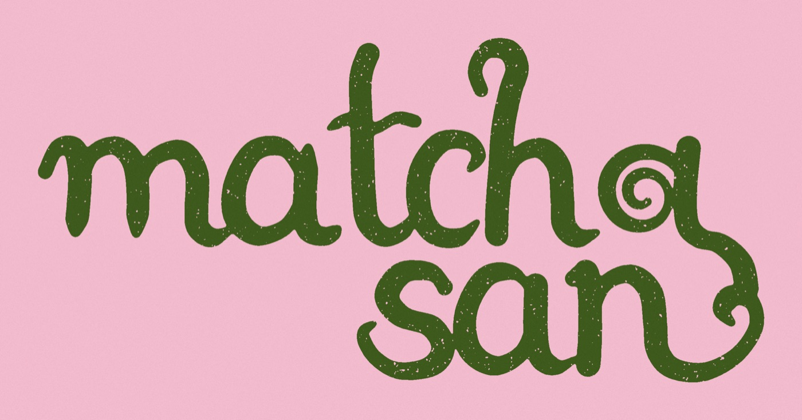
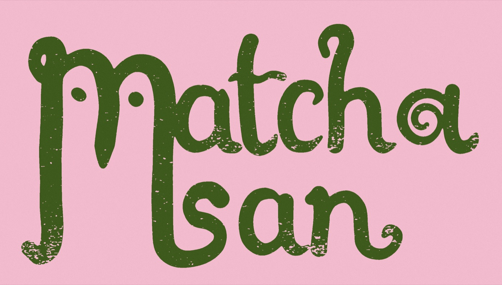
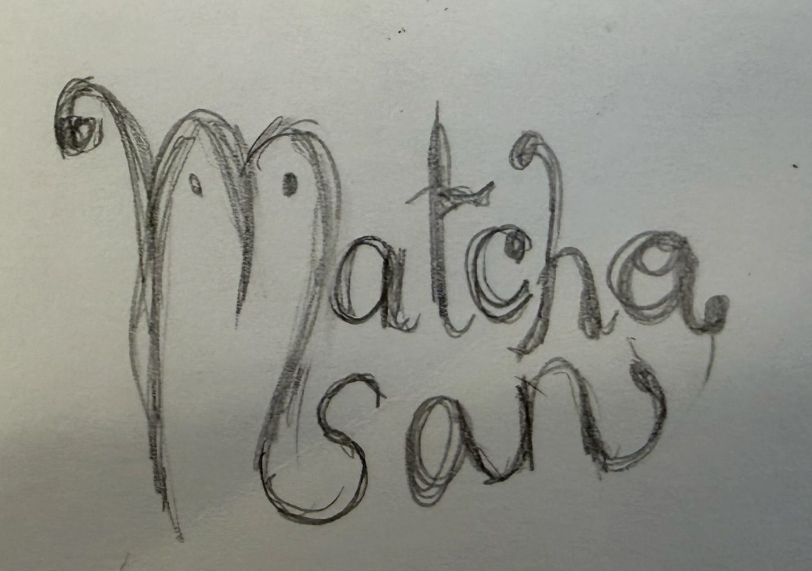
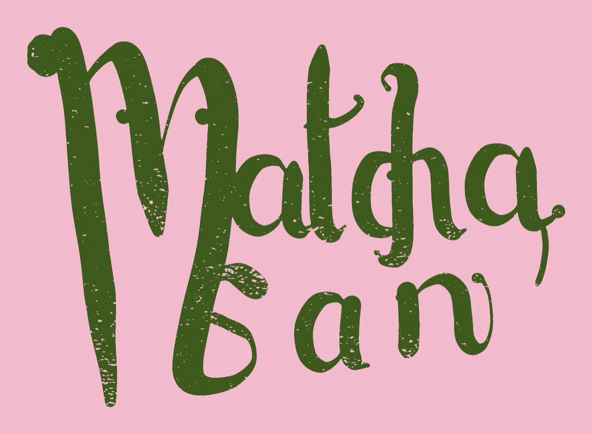
I drew the lettering by hand and gave Claude the sketch. Version 4 came out looking like a toddler's handwriting. Code could follow the rules on paper, but not the feeling behind them.
In Figma Weave, the free plan has very few models that take both images and a prompt. I gave GPT Image 2.6, Nano Banana and Ideogram the same moodboard and a shortened TASTE.md, and scored each against the rubric next to Claude's best version.
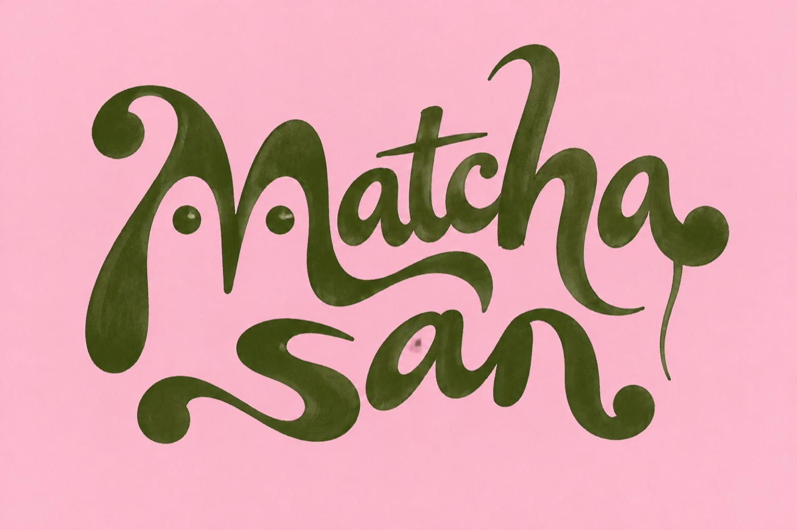
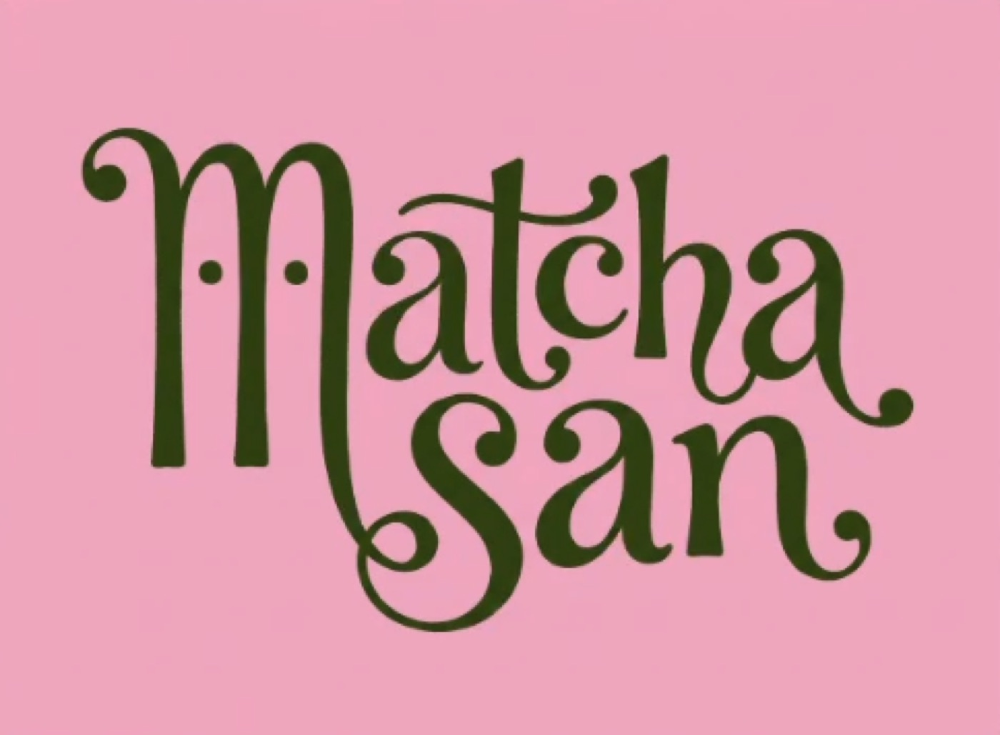
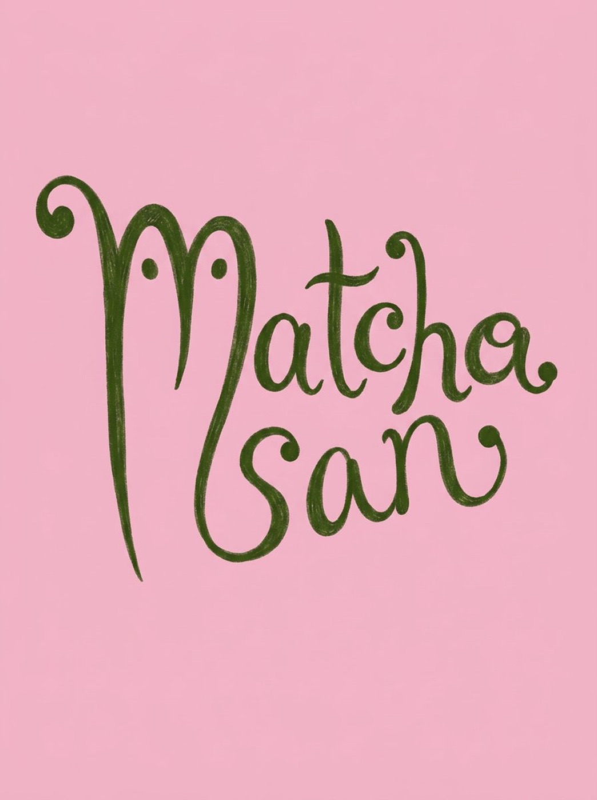
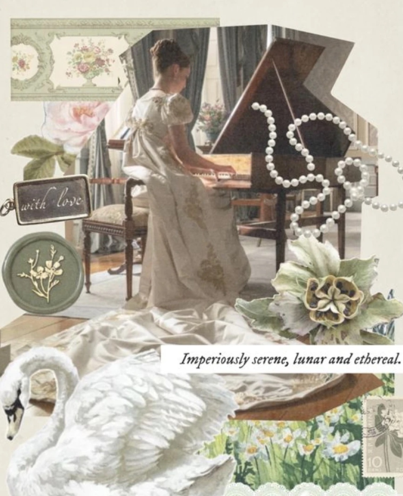
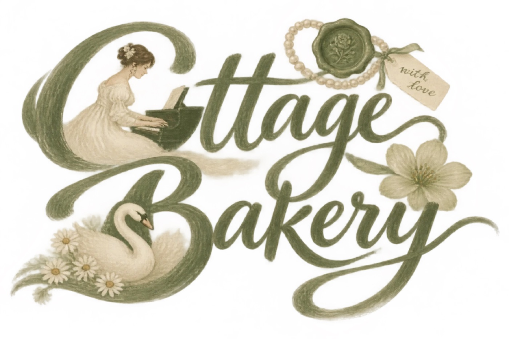
For Cottage Bakery I used the same rules and the same workflow. The model drew everything in the moodboard: cottage, bread, flowers, all at once. I had over-prompted it.
That is my biggest struggle: image models can't follow the same rules consistently.
Buterflai is a Monet garden that moves with your cursor. You pick mood tiles, name your brand, and the site turns your picks into a brief: a palette, a font pair and a short prompt written from TASTE.md. Then it paints the logo.